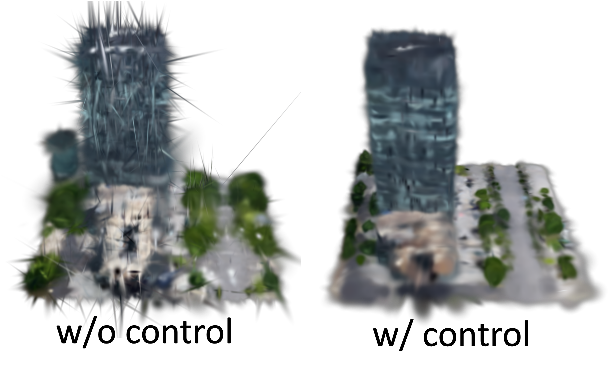
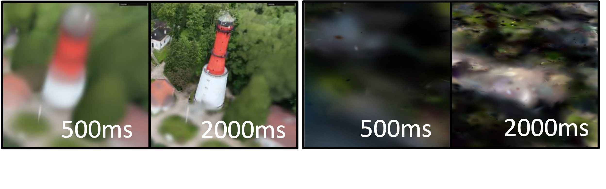
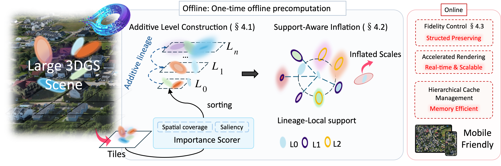
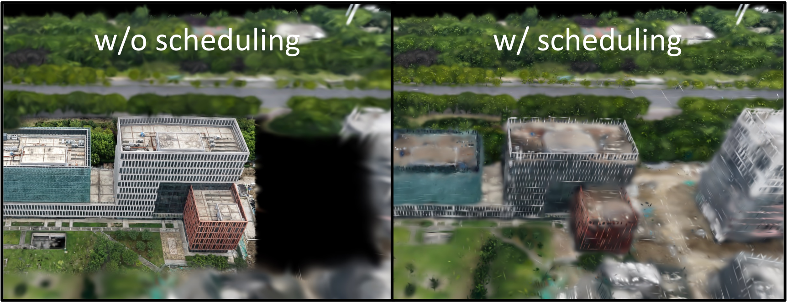
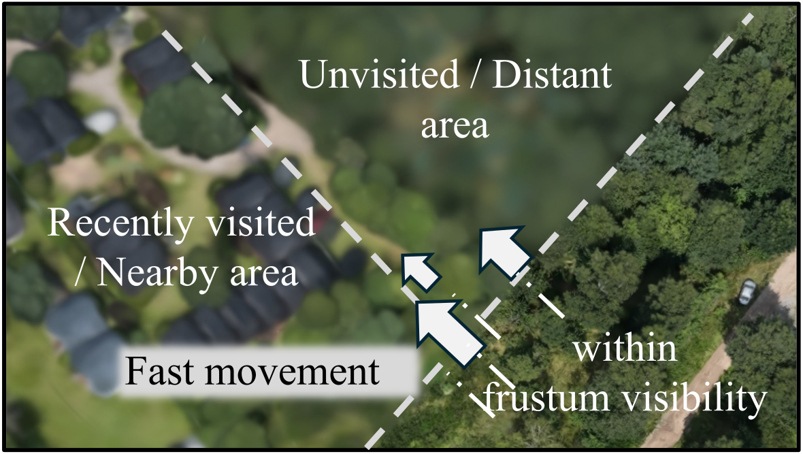
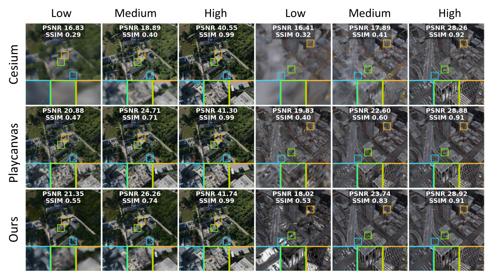
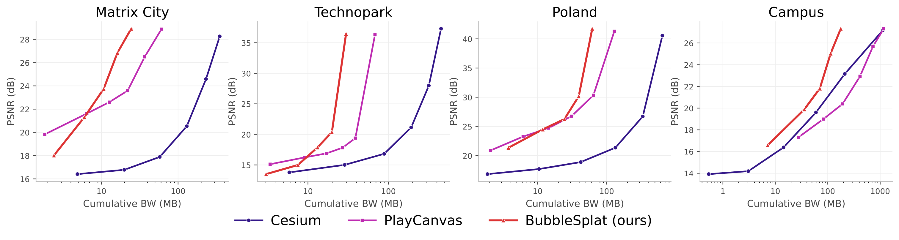
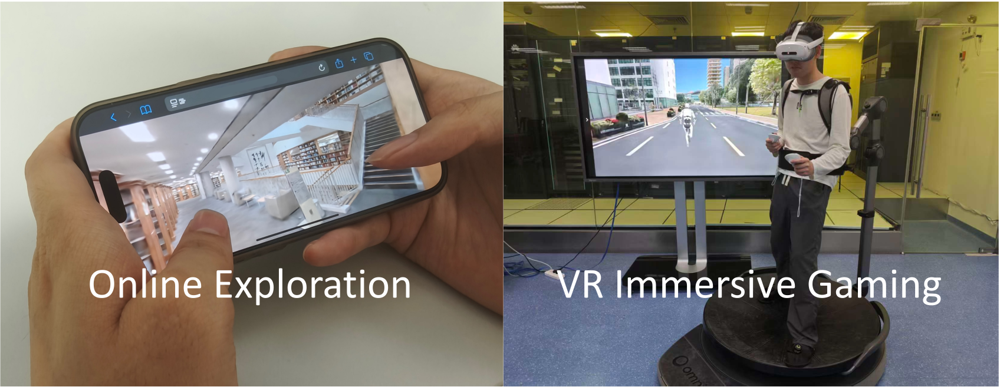
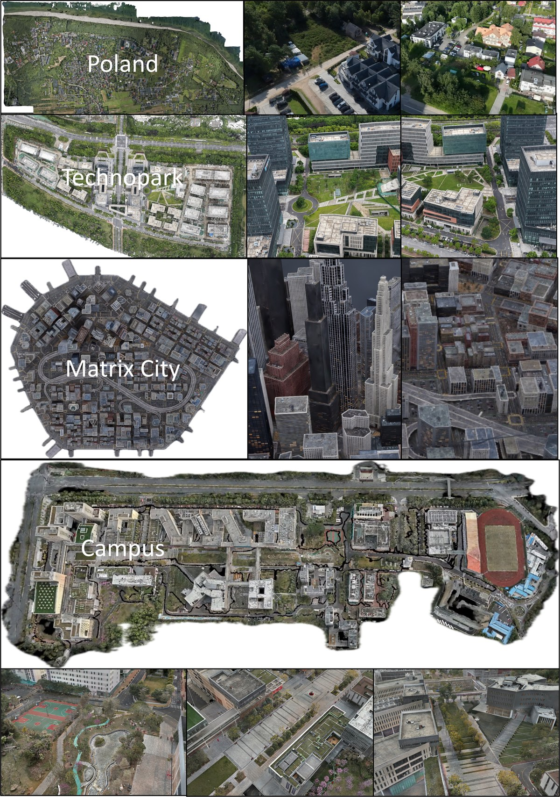

Fidelity control
Preserving structure during inflation prevents the coarse model from collapsing into elongated noise, so early prefixes remain visually useful instead of dissolving into artifacts.
Forget Swollen LODs with Low-Redundancy, Inflation-Driven 3D Gaussian Streaming
The next-generation streaming system for massive 3D Gaussian scenes.
BubbleSplat streams large scenes as transmit-once, coarse-to-fine splat tiles, inflates sparse early prefixes into coherent proxies, and keeps coarse levels resident as a bounded-memory cache once refinement moves on.
Demo
The demo shows progressive delivery over large scenes with stable coarse structure, continuous refinement, and real-time interaction on constrained clients.
Paper Summary
The paper starts from a concrete systems problem: current large-scene 3D Gaussian Splatting delivery pipelines either waste bandwidth through replacement-based LOD or stay bandwidth-efficient but look sparse and incoherent until most of the scene has arrived.
BubbleSplat addresses that gap with a training-free offline and online design. Offline, it partitions a pretrained scene into tiles, builds additive levels with hybrid saliency and spatial coverage, and inflates early Gaussians using lineage-local support so coarse prefixes behave like visually useful proxies. Online, a value-per-byte scheduler sends the most useful chunks first, while inflated coarse levels remain in memory as a persistent LOD cache for distant or evicted regions.
Across four benchmark scenes from 2.5M to 81M Gaussians, BubbleSplat cuts bandwidth redundancy to 11.1%, reduces that redundancy by over 80% against the state of the practice, reaches 27 dB with 3.23× fewer bytes than the strongest replacement baseline, and keeps real-time rendering viable on mobile-class hardware.
Replacement LOD retransmits overlapping structure. Vanilla additive avoids that tax but leaves early views hollow and memory footprints unbounded.
Inflate coarse Gaussians offline, then let append-only refinement shrink those proxies back toward the raw geometry as support arrives.
The design keeps the transport simple, improves the first useful view, and still behaves like a real LOD system when memory is tight.
Why Sculpted Additive
Replacement-based LOD keeps partial views coherent by repeatedly replacing content, while vanilla additive streaming transmits each primitive once but leaves early views hollow and structurally weak. BubbleSplat breaks that tradeoff by sculpting the coarse prefix into a visually useful proxy before refinement arrives.
Inflation turns sparse early Gaussians into stable coarse support, then additive refinement progressively shrinks those proxies back toward the original geometry instead of invalidating already transmitted content.


Method
BubbleSplat first partitions a pretrained scene into coarse-to-fine tiles, ranks Gaussians with saliency-aware coverage, and inflates sparse early levels into stable prefixes. At runtime, it schedules chunks by value per byte and retains inflated coarse levels as a persistent cache when memory budgets tighten.


Preserving structure during inflation prevents the coarse model from collapsing into elongated noise, so early prefixes remain visually useful instead of dissolving into artifacts.

BubbleSplat allocates bandwidth where it matters most, sending the highest-value tiles first instead of starving visually important regions.

Coarse parents stay resident when memory gets tight, so the runtime behaves like a scalable LOD system without retransmitting geometry.
Results
Coarse prefixes remain structurally legible during delivery, and the bytes-to-quality curves keep shifting left as scene scale grows. The gain is not just lower redundancy; it is a better return on each byte that reaches the client.

Figure 8 captures the qualitative side of the result: intermediate prefixes stay coherent instead of collapsing into sparse scaffolds. Figure 9 quantifies the same advantage, showing that BubbleSplat reaches target fidelity with much less transmitted data, especially on larger scenes.

Benchmarks And Applications
The evaluation spans Poland, Technopark, Matrix City, and Campus, from neighborhood-scale reconstructions to an 810M-splat stress test. The deployment targets stay practical throughout: mobile viewing, online exploration, and immersive navigation under tight bandwidth and memory budgets.

